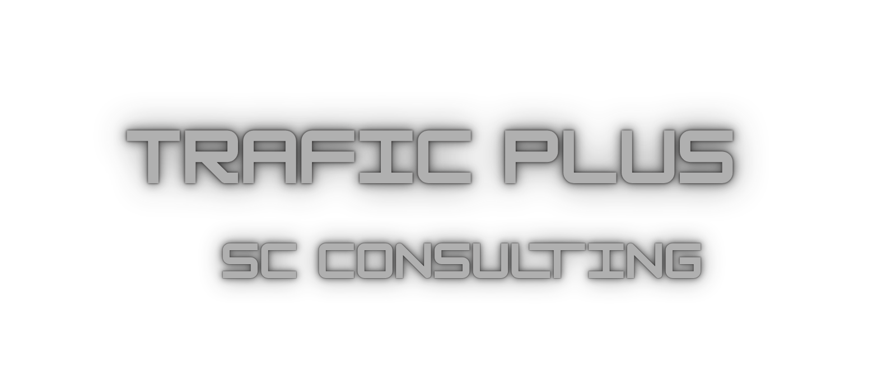
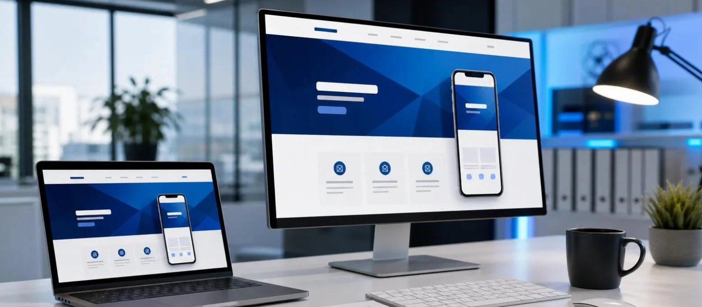
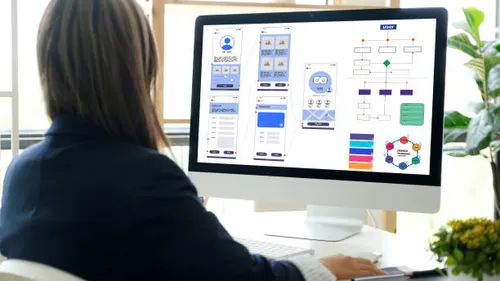
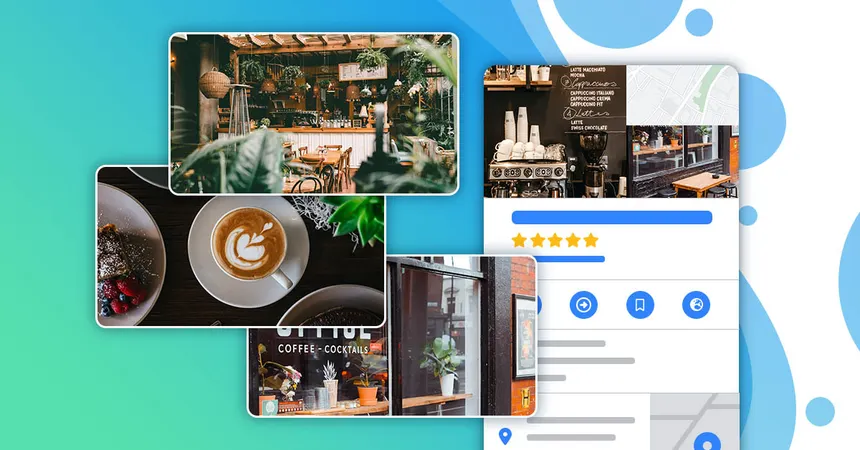
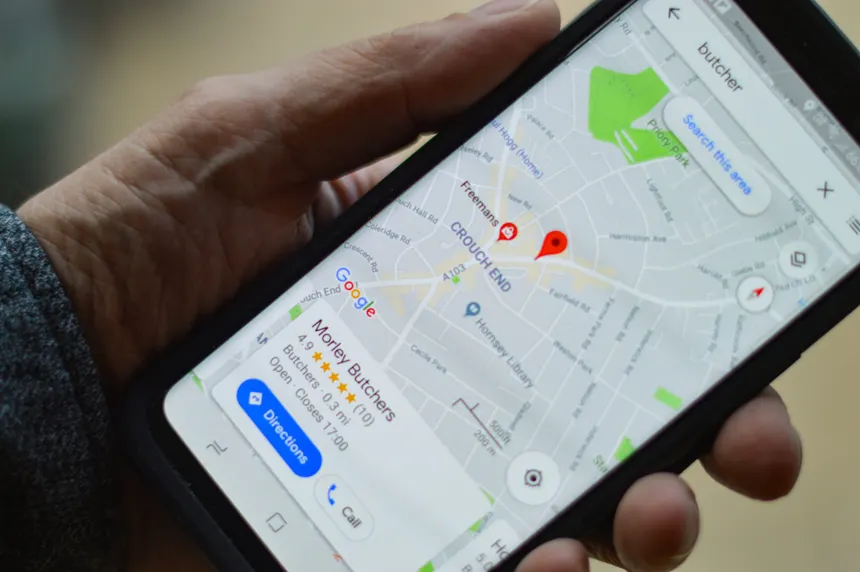
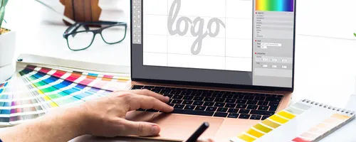
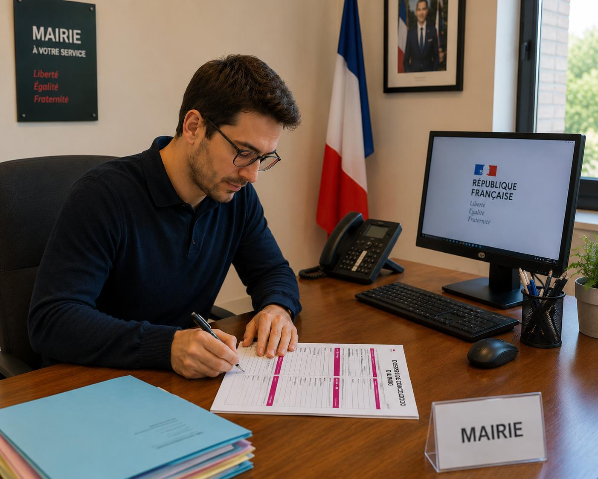

TRAFIC PLUS accompagne les particuliers, les étudiants, les entrepreneurs, les commerçants et les professionnels dans la réalisation de leurs projets personnels et professionnels.
Nous réunissons des compétences complémentaires pour vous proposer des solutions dans les domaines du numérique, de la communication, de l'accompagnement administratif et du développement d'activité.
Nous aidons les entreprises, commerces et professionnels à renforcer leur présence sur Internet et à mieux faire connaître leurs activités. Grâce à des solutions adaptées, nous vous accompagnons dans la valorisation de votre image et le développement de votre visibilité auprès de nouveaux clients.
Notre accompagnement comprend notamment l'optimisation de votre présence sur Google et Google Maps, la création de sites internet et de mini-sites professionnels, ainsi que la mise en valeur de vos services et de votre activité.
Nous réalisons des supports de communication modernes et personnalisés pour vous aider à présenter votre activité de manière professionnelle. De la création de votre logo à la conception de vos affiches, flyers et visuels publicitaires, nous mettons le design au service de votre image.
Nous vous accompagnons également dans la rédaction de contenus professionnels, la valorisation de votre identité visuelle et l'amélioration de votre communication sur les réseaux sociaux.
TRAFIC PLUS vous apporte une assistance dans l'organisation et la préparation de vos démarches administratives. Nous vous aidons à comprendre les formalités, à organiser vos documents et à constituer des dossiers adaptés à votre situation.
Nous proposons également une assistance dans la préparation des dossiers de demande de visa, ainsi qu'un accompagnement des étudiants dans leurs projets d'études, leurs recherches de bourses et l'organisation de leurs candidatures.
Nous proposons des prestations d'assistance informatique, de maintenance et d'accompagnement technique afin de vous aider à utiliser efficacement vos outils numériques. Notre objectif est de vous apporter des solutions pratiques pour faciliter votre quotidien et soutenir vos activités.
Chaque projet est différent. C'est pourquoi nous prenons le temps d'étudier vos besoins, de comprendre vos objectifs et de vous orienter vers les solutions les plus adaptées. Nous privilégions une approche personnalisée, fondée sur l'écoute, la disponibilité, le sérieux et la qualité du service.
Choisir Trafic Plus, c’est faire le choix d’un accompagnement professionnel, polyvalent et personnalisé pour donner une nouvelle dimension à vos projets et à vos ambitions.
Nous mettons notre savoir-faire et notre expérience au service des particuliers, étudiants, artisans, commerçants, entrepreneurs et professionnels en Europe et en Afrique. Notre objectif est de vous apporter des solutions concrètes pour développer votre activité, renforcer votre image et faciliter la réalisation de vos projets.
De la création de votre présence numérique à la valorisation de votre image professionnelle, nous vous accompagnons dans toutes les étapes de votre développement :
Chez Trafic Plus, nous considérons chaque projet comme une priorité. Nous prenons le temps de comprendre vos attentes, d'étudier vos besoins et de vous proposer des solutions adaptées à vos objectifs, à votre situation et à votre budget.
Nous privilégions la disponibilité, la réactivité, la transparence et la qualité du travail. Vous bénéficiez d'un interlocuteur attentif, qui vous accompagne et vous informe à chaque étape de votre projet.
TRAFIC PLUS, BIEN PLUS QU'UN PRESTATAIRE : UN PARTENAIRE POUR VOTRE RÉUSSITE.
Votre activité mérite d'être visible. Vos projets méritent d'être accompagnés. Votre réussite mérite toute notre attention.
Je me concentre uniquement sur la visibilité locale Google. Pas de solutions génériques, uniquement ce qui fonctionne pour attirer des clients près de chez vous.
Plus d’appels, plus de demandes, plus de visites. Mon travail est orienté résultats mesurables, pas promesses vagues.
Un seul interlocuteur, disponible et à l’écoute. Je vous explique ce que je fais et pourquoi je le fais.

Trafic Plus vous propose un ensemble de services professionnels et complémentaires pour accompagner le développement de votre activité, valoriser votre image, renforcer votre présence numérique et faciliter la réalisation de vos projets.
Nous concevons des sites internet modernes, attractifs, rapides et adaptés à tous les écrans. Que vous soyez entrepreneur, commerçant, artisan ou professionnel, nous créons une vitrine numérique qui présente vos activités, valorise vos prestations et facilite le contact avec vos clients. Nous proposons également des mini-sites simples et efficaces pour présenter rapidement votre activité.
Nous créons, configurons et optimisons votre fiche Google Business afin d'améliorer la présentation de votre entreprise et sa visibilité dans les résultats de recherche. Notre accompagnement vise à renforcer votre présence locale, à valoriser vos informations professionnelles et à faciliter la découverte de vos services par de nouveaux clients.
Nous travaillons sur les informations, la présentation et la cohérence de votre établissement sur Google Maps. L'objectif est de permettre aux internautes de mieux identifier votre activité, de vous localiser plus facilement et de découvrir vos prestations lorsqu'ils recherchent des services à proximité.
Les avis clients jouent un rôle important dans la confiance accordée à une entreprise. Nous vous accompagnons dans la mise en place de bonnes pratiques pour encourager les retours authentiques, faciliter la collecte des avis et valoriser votre réputation en ligne.
Nous rédigeons des textes clairs, convaincants et adaptés à votre activité pour présenter vos services, vos produits et votre savoir-faire. Des contenus bien structurés et optimisés pour le référencement contribuent à améliorer votre communication, à capter l'attention et à inspirer confiance à vos visiteurs.
Nous créons des logos et des identités visuelles modernes, cohérents et adaptés à votre univers professionnel. Notre objectif est de construire une image reconnaissable, de renforcer votre crédibilité et de vous aider à vous démarquer auprès de votre clientèle.
Nous réalisons des supports de communication adaptés à vos besoins : flyers, affiches, visuels publicitaires, publications pour les réseaux sociaux et autres créations graphiques. Chaque support est conçu pour valoriser votre marque et transmettre efficacement votre message.
Nous proposons un accompagnement technique pour assurer le bon fonctionnement de vos outils numériques : maintenance de sites web, assistance informatique, résolution de problèmes techniques et conseils pour améliorer la sécurité et la fiabilité de vos équipements et services numériques.
Nous vous accompagnons dans la compréhension, la préparation et le suivi de vos démarches administratives. Nous pouvons notamment vous aider à organiser vos documents, préparer vos dossiers, identifier les démarches adaptées à votre situation et vous orienter vers les services compétents lorsque cela est nécessaire.
Accompagnement dans la préparation et le suivi de vos démarches administratives et préfectorales : demandes de rendez-vous, renouvellement de titres de séjour, constitution de dossiers et suivi des procédures en attente. Nous vous aidons à comprendre les formalités et à préparer les documents nécessaires.
Accompagnement des étudiants dans leurs projets d'études en France et à l'international : recherche d'opportunités de bourses, orientation, préparation des candidatures, organisation des documents et assistance dans les démarches de demande de visa étudiant.
Assistance dans diverses formalités de la vie quotidienne, personnelle et professionnelle : rédaction de courriers, préparation de documents, constitution de dossiers et orientation vers les organismes compétents selon vos besoins.
Notre ambition est de vous offrir un accompagnement accessible, sérieux et adapté à vos besoins. Que votre objectif soit de développer votre entreprise, d'améliorer votre visibilité, de valoriser votre image ou de faire avancer un projet personnel ou professionnel, Trafic Plus met ses compétences à votre service.
TRAFIC PLUS : DES SOLUTIONS CONCRÈTES POUR VOS PROJETS, VOTRE DÉVELOPPEMENT ET VOTRE RÉUSSITE.
Site vitrine professionnel, rapide et optimisé Google, Mini Site vitrine simple et efficace

Création & optimisation complète

Meilleur positionnement local
Plus d’avis, plus de confiance
Création de contenus professionnels optimisés pour votre site web

Logo professionnel moderne adapté à votre activité
Visuels, supports marketing et identité visuelle complète
Assistance, dépannage et maintenance pour professionnels
Accompagnement et suivi dans vos démarches administratives et demandes de visa. Rendez-vous en préfecture, dossiers en attente ou documents qui n'avancent pas : voyons ensemble les solutions possibles.
Assistance dans la constitution et le suivi de vos dossiers administratifs : demandes de rendez-vous en préfecture, titres de séjour, renouvellements et formalités administratives. Nous vous aidons à mieux comprendre les procédures et à préparer vos démarches.
Accompagnement des étudiants dans leurs projets d'études : recherche d'opportunités de bourses, orientation, préparation des candidatures, organisation des dossiers et assistance dans les démarches de demande de visa étudiant.

Assistance dans vos formalités personnelles et professionnelles : rédaction de courriers, préparation de documents, constitution de dossiers et accompagnement dans diverses démarches auprès des organismes et services concernés.
Fort de plus de 5 années d’expérience dans la visibilité digitale et les services numériques,
Souhaibou CISSE accompagne les artisans et petits commerces dans leur développement
afin d’augmenter leur visibilité et d’obtenir davantage de clients.
Spécialiste du référencement local (Google Business & Google Maps),
il intervient également dans la création de sites web professionnels,
la rédaction de contenus optimisés, la création de logos et d’identités visuelles,
le design graphique ainsi que la maintenance et l’assistance informatique.
Son approche repose sur la rigueur, la rapidité d’exécution et le respect des délais.
Chaque projet est réalisé avec sérieux et professionnalisme, avec un objectif clair :
obtenir des résultats concrets et mesurables.
Les clients sont toujours satisfaits de son travail et apprécient particulièrement
sa réactivité, la qualité des prestations fournies et l’efficacité des solutions mises en place.
“Avant Trafic Plus, je n’avais presque aucun appel via Google. Aujourd’hui, mon téléphone sonne tous les jours.”
— Julie, salon de coiffure (Paris)“Très professionnel, clair et efficace. Ma fiche Google est enfin visible et bien positionnée.”
— Karim, boulanger (92)“Un vrai accompagnement, pas juste un service. Je recommande sans hésiter.”
— Sophie, esthéticienne (78)Demandez votre diagnostic gratuit et découvrez comment améliorer votre visibilité sur Google dès maintenant.
Je veux plus de clients